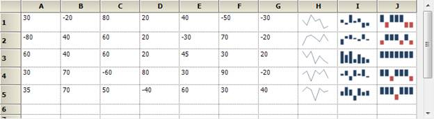

Sparkline Overview
A Sparkline control is a type of information graphic characterized by its small size, high data density and lightweight. It presents trends and variations in a very condensed fashion. The Sparkline does not contain an axis scale and is intended to give a high level overview of what happened to the data over time.
Use Case Scenarios
A sparkline can display a trend based on adjacent data in a clear and compact graphical representation. The purpose of sparkline is to quickly see the data range difference with high density data and it is represented in lightweight graphical representation. You can use it as per your requirement.
The following screenshot shows three types of sparklines, which are drawn inside the grid control cell, based on row values.

Figure 88: Sparkline control in RealTime
Tables for Properties, Methods, and Events
Properties
|
Property |
Description |
Type |
Data Type |
Reference links |
|
Type |
Specifies the types of spark lines. · Line · Column · WinLoss By default, it is set to Line type. |
NA |
NA |
NA |
|
Source |
Gets or sets the data source for sparkline data points |
NA |
NA |
NA |
|
LineStyle |
Customizes the styles of Line sparkline |
NA |
NA |
NA |
|
ColumnStyle |
Customizes the styles of Column and Winloss sparklines |
NA |
NA |
NA |
|
Markers |
Enables the markers support to sparkline |
NA |
NA |
NA |
|
BackInterior |
Customizes the background color of the control. By default, it is set to White color |
NA |
NA |
NA |
Methods
|
Method |
Description |
Parameters |
Type |
Return Type |
Reference links |
|
GetHighPoint |
Gets the highest point value from the sparkline |
NA |
NA |
Void |
NA |
|
GetLowPoint |
Gets the lowest point value from the sparkline |
NA |
NA |
Void |
NA |
|
GetStartPoint |
Gets the start point value from the sparkline |
NA |
NA |
Void |
NA |
|
GetEndPoint |
Gets the end point value from the sparkline |
NA |
NA |
Void |
NA |
Events
NA
Sample Link
To access a Sparkline sample Demo:
1. Open the Syncfusion Dashboard.
2. Select User Interface.
3. Click the Windows Forms drop-down list and select Explore Samples.
4. Navigate to Chart.Windows -> Samples -> 2.0 -> SparklineChart.
Types of Sparklines
Presently, Syncfusion SparkLine control supports three types of Sparklines and the sparkline control must be bound to a data source. It supports a variety of datasource such as DataTable and any component that implements the interface IEumerable, ICollection, IList.
· Line
· Column
· WinLoss
Drawing Line Sparkline in an Application
The line type of spark line represents a set of data points, connected by a line.
Refer to the following code snippets to draw the line sparkline.
|
[C#.NET] //Set Sparkline points to source property this.sparkLine1.Source =new double[] { 30, -20, 80, 20, 40, -50, -30, 70, -40, 50 }; //Set line type sparkline this.sparkLine1.Type = SparkLine.SparkLineType.Line; |
|
[VB.NET] 'Set Sparkline points to source property Me.sparkLine1.Source = New Double() {30, -20, 80, 20, 40, -50,-30, 70, -40, 50}
'Set line type sparkline Me.sparkLine1.Type = SparkLine.SparkLineType.Line |
Figure 89: Line SparkLine
Drawing Column Sparkline in an Application
The column type of spark line represents each data point by a
column. The vertical column direction represents the negative or positive
value.
Refer to the following code snippets to draw the column sparkline:
|
[C#.NET] //Set Sparkline points to source property this.sparkLine1.Source =new double[] { 30, -20, 80, 20, 40, -50, -30, 70, -40, 50 }; //Set line type sparkline this.sparkLine1.Type = SparkLine.SparkLineType.Column; |
|
[VB.NET] 'Set Sparkline points to source property Me.sparkLine1.Source = New Double() {30, -20, 80, 20, 40, -50,-30, 70, -40, 50}
'Set line type sparkline Me.sparkLine1.Type = SparkLine.SparkLineType. Column |

Figure 90: Column SparkLine
Drawing WinLoss Sparkline in an Application
The Winloss type of spark line is similar to column type but
all columns have equal length for data points. The vertical column
direction represents the negative or positive value.
Refer to the following code snippets to draw the WinLoss sparkline:
|
[C#.NET] //Set Sparkline points to source property this.sparkLine1.Source =new double[] { 30, -20, 80, 20, 40, -50, -30, 70, -40, 50 }; //Set line type sparkline this.sparkLine1.Type = SparkLine.SparkLineType.WinLoss; |
|
[VB.NET] 'Set Sparkline points to source property Me.sparkLine1.Source = New Double() {30, -20, 80, 20, 40, -50,-30, 70, -40, 50}
'Set line type sparkline Me.sparkLine1.Type = SparkLine.SparkLineType. WinLoss |
Figure 91: WinLoss SparkLine
Marker Support
The markers are visual indicators to represent the location of data points in the Sparkline graph. The markers can support three types of sparklines.
|
Marker Property |
Description |
|
ShowMarker |
Indicates whether the marker should be displayed at every data point location in line sparkline. By default it is set to False. |
|
ShowHighPoint |
Enables markers to show the highest values in all types of sparklines. By default it is set to False. |
|
ShowLowPoint |
Enables markers to show the lowest values in all types of sparklines. By default it is set to False. |
|
ShowStartPoint |
Enables markers show start values in all types of sparklines. By default it is set to False. |
|
ShowEndPoint |
Enables markers to show end values in all types of sparklines. By default it is set to False. |
|
ShowNegativePoint |
Enables markers to show negative values in all types of sparklines. By default it is set to False. |
|
MarkerColor |
Gets or sets the marker color for line type sparkline. This property color is set to sparkline marker when enabling the ShowMarker property. |
|
HighPointColor |
Gets or sets the high point color for line type sparkline. This property color is set to sparkline marker when enablinge the ShowHighPoint property. |
|
LowPointColor |
Gets or sets the low point color to line type sparkline. This property color is set to sparkline marker when enabling the ShowLowPoint property. |
|
StartPointColor |
Gets or sets the start point color for line type sparkline. This property color is set to sparkline marker when enabling the ShowStartPoint property. |
|
EndPointColor |
Gets or sets the end point color to line type sparkline. This property color is set to sparkline marker when enabling the ShowEndPoint property. |
|
NegativePointColor |
Gets or sets the negative point color to line type sparkline. This property color is set to sparkline marker when enabling the ShowNegativePoint property. |
Markers Support for Line
This marker feature supports data points of line sparkline. You can choose the marker color for data points.
Refer to the following code snippets to enable the marker in line sparkline.
|
[C#.NET] //To enable marker to sparkline for all data points this.sparkLine1.Markers.ShowMarker =true; |
|
[VB.NET] 'To enable marker to sparkline for all data points Me.sparkLine1.Markers.ShowMarker =True |

Figure 92: Marker for Line SparkLine
Markers Support for Column
This marker feature supports High Points, Low Points, Start
Point and Negative Point of column sparkline. You can choose the marker
color for data points.
Refer to the following code snippets to enable the marker in column sparkline.
|
[C#.NET] //To enable marker to sparkline high,low,start,end,negative data points this.sparkLine1.Markers.ShowHighPoint = true; this.sparkLine1.Markers.ShowLowPoint = true; this.sparkLine1.Markers.ShowStartPoint = true; this.sparkLine1.Markers.ShowEndPoint = true; this.sparkLine1.Markers.ShowNegativePoint= true;
//To customize the marker color to low points this.sparkLine1.Markers.LowPointColor = new BrushInfo(GradientStyle.BackwardDiagonal, Color.Blue, Color.Wheat); |
|
[VB.NET] //To enable marker to sparkline high,low,start,end,negative data points Me.sparkLine1.Markers.ShowHighPoint = True Me.sparkLine1.Markers.ShowLowPoint = True Me.sparkLine1.Markers.ShowStartPoint = True Me.sparkLine1.Markers.ShowEndPoint = True Me.sparkLine1.Markers.ShowNegativePoint= True
//To customize the marker color to low points Me.sparkLine1.Markers.LowPointColor = new BrushInfo(GradientStyle.BackwardDiagonal, Color.Blue, Color.Wheat) |
Figure 93: Markers for Column SparkLine
Markers Support for WinLoss
This marker feature supports High Points, Low Points, Start Point and Negative Point of WinLoss Sparkline. The markers feature of WinLoss is the same as Column markers. You can choose the marker color for data points.
Refer to the following code snippets to enable the marker in column sparkline.
|
[C#.NET] //To enable marker to sparkline high,low,start,end,negative data points this.sparkLine1.Markers.ShowHighPoint = true; this.sparkLine1.Markers.ShowLowPoint = true; this.sparkLine1.Markers.ShowStartPoint = true; this.sparkLine1.Markers.ShowEndPoint = true; this.sparkLine1.Markers.ShowNegativePoint= true;
//To customize the marker color to low points this.sparkLine1.Markers.LowPointColor = new BrushInfo(GradientStyle.BackwardDiagonal, Color.Blue, Color.Wheat); |
|
[VB.NET] //To enable marker to sparkline high,low,start,end,negative data points Me.sparkLine1.Markers.ShowHighPoint = True Me.sparkLine1.Markers.ShowLowPoint = True Me.sparkLine1.Markers.ShowStartPoint = True Me.sparkLine1.Markers.ShowEndPoint = True Me.sparkLine1.Markers.ShowNegativePoint= True
//To customize the marker color to low points Me.sparkLine1.Markers.LowPointColor = new BrushInfo(GradientStyle.BackwardDiagonal, Color.Blue, Color.Wheat) |

Figure 94: Markers for WinLoss SparkLine